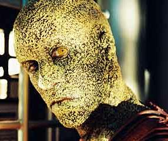

Sulibani |
|
||||
|  |
Specie nomade, senza un pianeta natale di origine, provengono dal settore
3641 del quadrante Alfa; il loro mondo è diventato inabitabile verso la
metà del XIX secolo e da allora
è iniziata una diaspora in tutto il quadrante (Detained).
Non si sono mai dimostrati minacciosi nei confronti dei
Vulcaniani, secondo T'Pol. I Sulibani sono
ossessionati dalle modifiche genetiche. Alcuni Sulibani sono in contatto con
degli esseri del futuro remoto in cui c'è una situazione di Guerra Civile
Temporale che coinvolge anche i Klingon.
Nel 2152 possiedono dei vascelli
con una tecnologia di occultamento (Shockwave - Part I).
Biologia
Razza umanoide di due sessi, geneticamente hanno il medesimo grado di evoluzione
degli umani. Hanno un polmone con 3 lobi bronchiali (Broken
Bow) e hanno una pelle butterata di colore marrone, con capacità di
mutaforma attraverso il contatto fisico. I Sulibani riescono a percepire se un
umano mente, ma devono toccarlo (Broken Bow).
Il Dottor Phlox durante l'autopsia di un Sulibano ha rilevato alcune alterazioni
genetiche, tra cui: polmone con 5 lobi bronchiali e modifica agli alveoli per
poter sopportare diversi tipi di atmosfera; retine composte che permettono di
percepire una banda più ampia di segnali; sacche sottocutanee di pigmenti per
migliorare le capacità mimetiche.
Civiltà
Anche i Sulibani conoscono il rito del matrimonio (Broken
Bow).